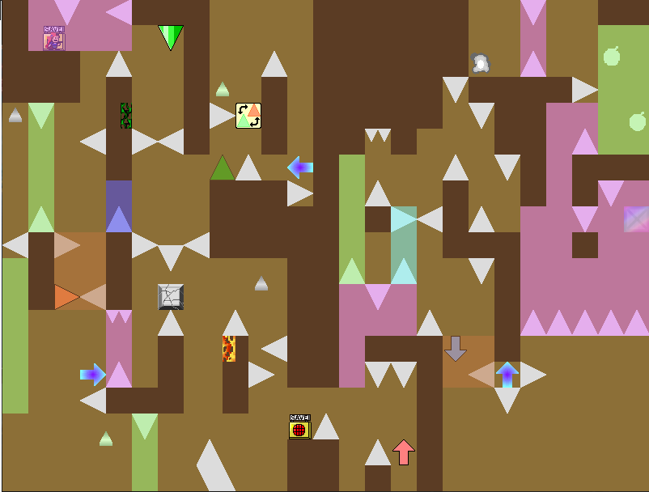
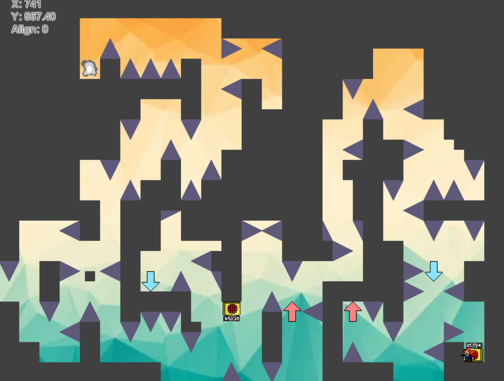
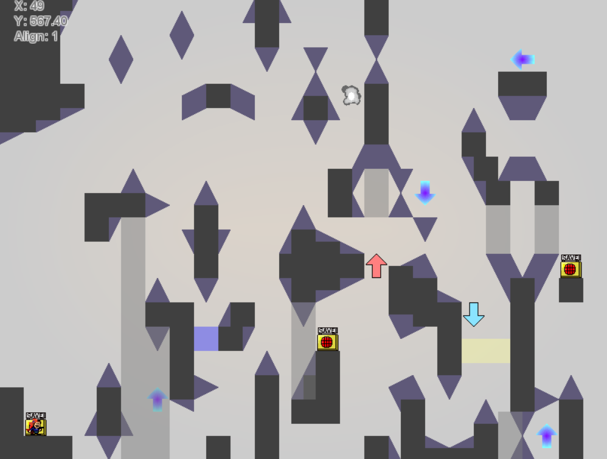
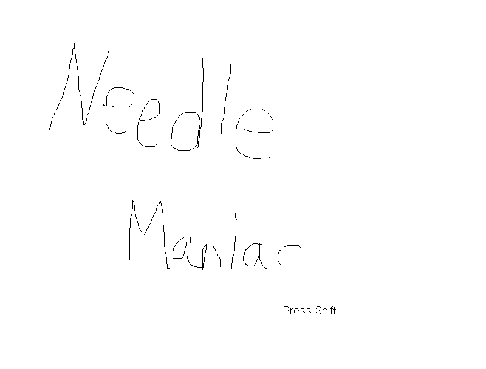
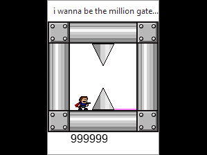
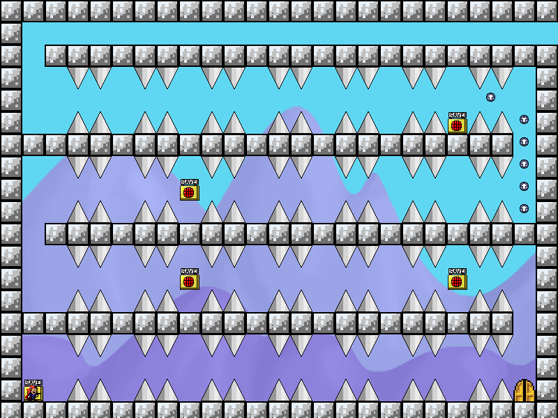
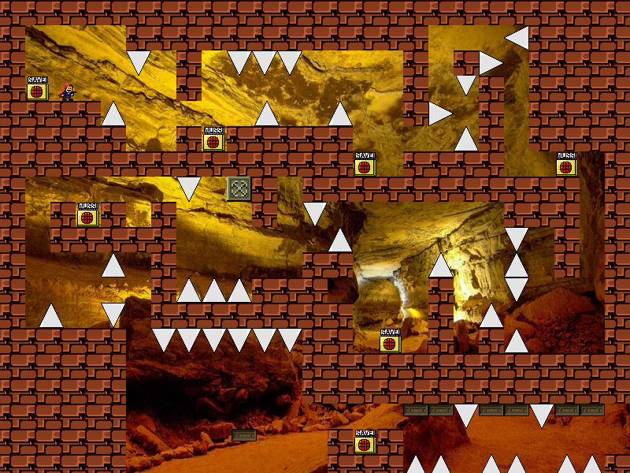

These are brief description of my best fangames, with download link.
More fangames made by me are available, but they are not that good in my standard. All of my games(Delfruit)

Moderately hard puzzle needle. Difficulty : 75 DL

Consistency needle with some setup jumps. Difficulty : 55 DL

Gimmick needle because I'm too cute. Difficulty : 65 DL
Relatively easy L-needle. Need very slight knowledge about needle techs. Difficulty : 70 DL (Dropbox)

100-Floor Puzzle-Needle game. Very difficult platforming and puzzle. Difficulty : 85 DL (Google)

5-room long gravity arrow maze. Everything is very elementary and require no techs. Difficulty : 50 DL (Dropbox)

Sequel of slice of life needle. Very similar style but little bit harder. Difficulty : 60 DL (Dropbox)

Corridor needle without specific grid snap. Has many unusual jumps and your brain won't hurt with this game. Difficulty : 50 DL (Mediafire)

Sequel of 'Tori another'. Much harder and longer. Difficulty : 65 DL (Dropbox)

It's just a gate jump, but you have to do it many times. Difficulty : ? (Private)

Very hard adventure game. Difficulty : 80 DL (Mediafire)

Sequel of I wanna cancer cancer cancer. Was private for 5 years before release. Difficulty : 100% 85?? DL (Mediafire)

Collab needle game with Korean creators. I have a relatvely easy stage for it. Difficulty : 55(My stage) DL (Mediafire)

Collab needle game made for Chinese equivalent of the Fangame Marathon. It's little bit difficult. Difficulty : 70(My stage) DL (Mediafire)